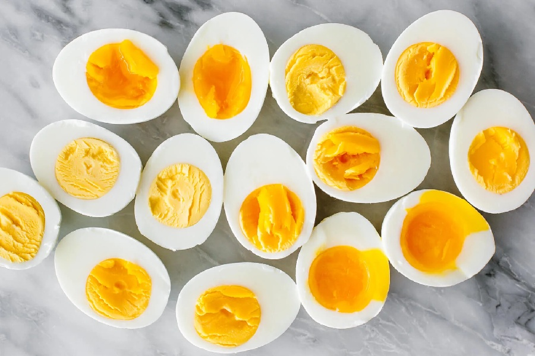

Egg
My favourite food is fried egg. Fried egg is a simple food that you can eat in every meal.
It has protien and fats. Fried egg is easy to cook and have many advantage.
I can't imagine my meal without fried egg.
There are many different opinions on what is a favourite food.
For some people, their favourite food might be something sweet
whereas for others it could be a savoury dish.
My favourite foods are egg, milk and vegetables.
My favourite food is fried egg. Fried egg is a simple food that you can eat in every meal.
It has protien and fats. Fried egg is easy to cook and have many advantage.
I can't imagine my meal without fried egg.
Milk is liquid food. It is good for sound health.
Milk has all the elements of good food. It keeps fresh our brain.
It is an ideal food for babies and patients. We get vitamins from milk.
It plays an important role in our diet every day.
Vegetables are my favourite food, too.
There is a variety of vegetables in our daily life.
Vegetables contain vitamins. It also helps us to stay away from diseases.
Vegetables are available all year. Vegetables keep me strong and healthy.
Without vegetables, my diet is incomplete.